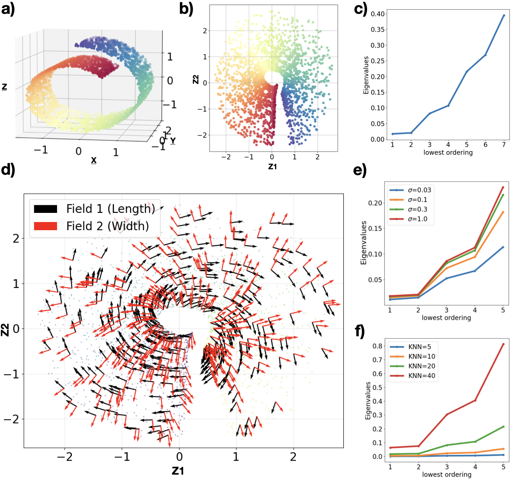

🌀 Tutorial 1: Swiss Roll
Synthetic Dataset Flat Manifold 2D intrinsic · 3D ambient
The Swiss Roll is a canonical manifold learning benchmark — a 2D sheet folded in 3D space. We use it to demonstrate that Latent-XAI correctly recovers the two intrinsic coordinate directions (length along the roll and width), even when the VAE latent space distorts the geometry.
Dataset
We generate one turn of the Swiss Roll using scikit-learn, keeping points where the time label t > 7 (approximately 1,900 samples). White noise with σ = 0.04 is added.
import numpy as np
from sklearn.datasets import make_swiss_roll
np.random.seed(0)
X_full, t_full = make_swiss_roll(n_samples=3000, noise=0.04, random_state=0)
# Subset: one turn (t > 7)
mask = t_full > 7
X, t = X_full[mask], t_full[mask]
print(f"Training samples: {X.shape[0]}") # ~1900 pointsVAE Architecture & Training
We train a Vanilla VAE with 4-layer encoder and decoder (hidden dim = 512). LeakyReLU is used for the encoder; ELU is used for the decoder (required for C¹ smoothness of the Jacobian).
import torch
import torch.nn as nn
class Encoder(nn.Module):
def __init__(self, in_dim=3, lat_dim=2, h=512):
super().__init__()
self.net = nn.Sequential(
nn.Linear(in_dim, h), nn.LeakyReLU(),
nn.Linear(h, h), nn.LeakyReLU(),
nn.Linear(h, h), nn.LeakyReLU(),
nn.Linear(h, h), nn.LeakyReLU(),
)
self.mu = nn.Linear(h, lat_dim)
self.log_var = nn.Linear(h, lat_dim)
class Decoder(nn.Module):
def __init__(self, lat_dim=2, out_dim=3, h=512):
super().__init__()
self.net = nn.Sequential(
nn.Linear(lat_dim, h), nn.ELU(), # ELU = C¹ smooth
nn.Linear(h, h), nn.ELU(),
nn.Linear(h, h), nn.ELU(),
nn.Linear(h, h), nn.ELU(),
nn.Linear(h, out_dim)
)
def forward(self, z): return self.net(z)
# Training configuration
# epochs=500, lr=1e-4, batch_size=128, β=0.1ELU provides C¹ continuity (smooth first derivative), which is required for the Jacobian of the decoder to define a smooth tangent space. ReLU and LeakyReLU have discontinuous derivatives at 0, causing kinks in the manifold image that disrupt the Connection Laplacian.
Fitting Latent-XAI
After training the VAE, encode the data to obtain latent codes Z, then fit the model.
For the Swiss Roll, principle_tangent_dims=2 since the manifold is intrinsically 2D.
from latentxai import lxai
# Encode data to latent space
encoder.eval()
with torch.no_grad():
mu, _ = encoder(torch.tensor(X, dtype=torch.float32))
Z = mu.numpy() # (N, 2)
# Fit Latent-XAI
model = lxai(
decoder=decoder, # trained PyTorch decoder
n_neighbors=20,
sigma=0.3,
principle_tangent_dims=2, # intrinsic dim of Swiss Roll
n_components=7
)
model.fit(Z)Results

Fig. 2 — Swiss Roll analysis. (a) Training data: one turn of the Swiss Roll in 3D, coloured by position in the turn. (b) 2D VAE latent representation — the VAE compresses the roll into a disk. (c) Seven smallest eigenvalues of the Connection Laplacian — note the spectral gap after index 2. (d) First two eigenvectors as vector fields over the latent space (black = length direction, red = width direction). (e,f) Sensitivity of the spectrum to σ and k.
Reading the Eigenvalue Spectrum
The Connection Laplacian spectrum is the key diagnostic. For the Swiss Roll:
import matplotlib.pyplot as plt
# Plot the eigenvalue spectrum
plt.figure(figsize=(6, 3))
plt.bar(range(1, 8), model.eigenvalues_[:7], color='steelblue')
plt.xlabel("Eigenvalue index"); plt.ylabel("λ")
plt.title("Connection Laplacian spectrum")
plt.axvline(2.5, color='red', linestyle='--', label='spectral gap')
plt.legend(); plt.tight_layout(); plt.show()Two near-zero eigenvalues followed by a clear spectral gap confirm that the manifold has two intrinsic dimensions. The corresponding eigenvectors give the parallel vector fields for length and width.
Visualise Vector Fields
from latentxai.plotting import plot_flow
# Plot first eigenvector (length direction)
plot_flow(
z_points=Z,
V_latent=model.VF_on_Z_, # first VF in latent space
overlay_color=t,
skip=10,
title="Swiss Roll — EV1 (length)"
)
# Project second eigenvector to latent space manually
VF2_latent = model.project_fields_to_latent(
torch.tensor(Z, dtype=torch.float32), model.PVF_on_X_[1]
)
plot_flow(Z, VF2_latent, t, skip=10, title="Swiss Roll — EV2 (width)")Hyperparameter Sensitivity
The Latent-XAI has two free parameters: sigma (Gaussian kernel width)
and n_neighbors (graph connectivity). Key findings:
- Increasing σ: widens the spectral gap but keeps the first two eigenvalues small — generally beneficial.
- Increasing k: also widens the gap, but raises eigenvalue magnitudes — higher values imply less-smooth fields.
As with all spectral methods, sigma and n_neighbors require
trial-and-error. Look for a clear spectral gap as your diagnostic.
Start with n_neighbors=20, sigma=0.3 and adjust from there.